<!doctype html><html lang="ko"><head><meta charset="utf-8"><meta name="viewport" content="width=device-width,initial-scale=1"><meta name="description" content="Deep Reinforcement Learning 슬라이드별 한국어 학습 가이드"><title>연속 제어: DDPG, TD3, SAC · Deep RL</title><link rel="stylesheet" href="../assets/site.css"><script>window.MathJax={tex:{inlineMath:[["\\(","\\)"]],displayMath:[["\\[","\\]"]]},options:{skipHtmlTags:["script","noscript","style","textarea","pre","code"]}};</script><script defer src="https://cdn.jsdelivr.net/npm/mathjax@3/es5/tex-chtml.js"></script></head><body data-prefix="../"><div class="reading-progress"></div><header class="site-header"><a class="brand" href="../index.html"><span class="brand-mark">π</span><span>Deep RL <b>Guide</b></span></a><span class="header-divider"></span><span class="header-subtitle">슬라이드별 학습 가이드</span><a class="pdf-link" href="../study-guide.pdf" download>PDF 가이드 ↓</a><button type="button" class="search-trigger" data-search-trigger><span>⌕</span> 검색 <kbd>/</kbd></button></header><div class="layout"><aside class="sidebar"><a class="sidebar-home" href="../index.html">← 전체 목차</a><div class="sidebar-label">강의</div><nav class="chapter-nav"><a class="chapter-link " href="../lecture/01-1.html"><span class="chapter-num">01-1</span><span><strong>Deep RL의 문제와 응용</strong><small>순차적 의사결정이 필요한 이유</small></span><span class="chapter-count">32</span></a><a class="chapter-link " href="../lecture/01-2.html"><span class="chapter-num">01-2</span><span><strong>Imitation learning과 로봇 정책</strong><small>시연 데이터에서 자율 행동으로</small></span><span class="chapter-count">50</span></a><a class="chapter-link " href="../lecture/02-1.html"><span class="chapter-num">02-1</span><span><strong>MDP와 순차적 의사결정</strong><small>상태·행동·보상·전이의 수학적 틀</small></span><span class="chapter-count">41</span></a><a class="chapter-link " href="../lecture/02-2.html"><span class="chapter-num">02-2</span><span><strong>Policy gradient와 REINFORCE</strong><small>확률적 정책을 기대 보상으로 최적화</small></span><span class="chapter-count">20</span></a><a class="chapter-link " href="../lecture/03-1.html"><span class="chapter-num">03-1</span><span><strong>가치함수와 Actor–Critic</strong><small>반환의 분산을 줄이는 학습 신호</small></span><span class="chapter-count">35</span></a><a class="chapter-link " href="../lecture/03-2.html"><span class="chapter-num">03-2</span><span><strong>GAE와 Proximal Policy Optimization</strong><small>분산을 관리하고 정책 변화를 제한</small></span><span class="chapter-count">27</span></a><a class="chapter-link " href="../lecture/04-1.html"><span class="chapter-num">04-1</span><span><strong>Q-learning, DQN과 Rainbow</strong><small>행동가치의 Bellman 최적성으로 학습</small></span><span class="chapter-count">42</span></a><a class="chapter-link is-current" href="../lecture/05-1.html"><span class="chapter-num">05-1</span><span><strong>연속 제어: DDPG, TD3, SAC</strong><small>결정론적 actor에서 최대 엔트로피 정책까지</small></span><span class="chapter-count">37</span></a><a class="chapter-link " href="../lecture/05-2.html"><span class="chapter-num">05-2</span><span><strong>RL 실험과 벤치마크</strong><small>성능 숫자를 신뢰할 수 있게 비교하기</small></span><span class="chapter-count">13</span></a><a class="chapter-link " href="../lecture/06.html"><span class="chapter-num">06</span><span><strong>Offline RL: 정적 데이터에서 정책 개선</strong><small>분포 이동을 다루는 보수적 학습</small></span><span class="chapter-count">42</span></a></nav><div class="sidebar-label sidebar-label-slides">이 장의 슬라이드</div><nav class="slide-nav"><a href="#s01" data-slide-link="01"><span>01</span>Reinforcement Learning</a><a href="#s02" data-slide-link="02"><span>02</span>Plan for today</a><a href="#s03" data-slide-link="03"><span>03</span>Policy is improved based on criterion :</a><a href="#s04" data-slide-link="04"><span>04</span>Bellman equation</a><a href="#s05" data-slide-link="05"><span>05</span>Problems in Q-learning</a><a href="#s06" data-slide-link="06"><span>06</span>Deep Q-Network (DQN)</a><a href="#s07" data-slide-link="07"><span>07</span>Improvements over DQN</a><a href="#s08" data-slide-link="08"><span>08</span>Overestimation in Q-learning</a><a href="#s09" data-slide-link="09"><span>09</span>Double DQN (DDQN)</a><a href="#s10" data-slide-link="10"><span>10</span>Improvements over DQN</a><a href="#s11" data-slide-link="11"><span>11</span>Fitted Q-iteration algorithm (Q-learning)</a><a href="#s12" data-slide-link="12"><span>12</span>Plan for today</a><a href="#s13" data-slide-link="13"><span>13</span>DQN for continuous aaction spaces?</a><a href="#s14" data-slide-link="14"><span>14</span>Finding greedy policy with continuous actions</a><a href="#s15" data-slide-link="15"><span>15</span>Deep Deterministic Policy Gradient</a><a href="#s16" data-slide-link="16"><span>16</span>Soft target update</a><a href="#s17" data-slide-link="17"><span>17</span>Deep deterministic policy gradient (DDPG)</a><a href="#s18" data-slide-link="18"><span>18</span>Epsilon-greedy exploration</a><a href="#s19" data-slide-link="19"><span>19</span>Summary of DDPG</a><a href="#s20" data-slide-link="20"><span>20</span>Plan for today</a><a href="#s21" data-slide-link="21"><span>21</span>DDPG also has overestimation in Q</a><a href="#s22" data-slide-link="22"><span>22</span>DDPG also has overestimation in Q</a><a href="#s23" data-slide-link="23"><span>23</span>Target policy smoothing</a><a href="#s24" data-slide-link="24"><span>24</span>Fujimoto et l. ddressing Funaction Approxim tion Error in Actor-Critic Meth</a><a href="#s25" data-slide-link="25"><span>25</span>Summary of TD3</a><a href="#s26" data-slide-link="26"><span>26</span>Plan for today</a><a href="#s27" data-slide-link="27"><span>27</span>Can we use stochastic policy?</a><a href="#s28" data-slide-link="28"><span>28</span>Maximum entropy RL</a><a href="#s29" data-slide-link="29"><span>29</span>Why is more random policy preferred?</a><a href="#s30" data-slide-link="30"><span>30</span>Soft Q-value</a><a href="#s31" data-slide-link="31"><span>31</span>Soft policy iteration</a><a href="#s32" data-slide-link="32"><span>32</span>Automatic temperature tuning</a><a href="#s33" data-slide-link="33"><span>33</span>Clipped double Q-learning Soft Q-value</a><a href="#s34" data-slide-link="34"><span>34</span>SAC</a><a href="#s35" data-slide-link="35"><span>35</span>TD3 vs. SAC</a><a href="#s36" data-slide-link="36"><span>36</span>What we have learned so far</a><a href="#s37" data-slide-link="37"><span>37</span>Next class</a></nav></aside><main class="lecture-main"><section class="lecture-hero"><div class="eyebrow">05-1장 · 37개 슬라이드</div><h1>연속 제어: DDPG, TD3, SAC</h1><div class="lecture-intro"><p>연속 행동 공간에서는 매 상태에서 <span class="math-inline">\(\arg\max_aQ(s,a)\)</span>를 격자 탐색할 수 없다. DDPG는 actor <span class="math-inline">\(\mu_	heta(s)\)</span>가 행동을 제안하고 critic <span class="math-inline">\(Q_\phi(s,a)\)</span>가 평가하도록 해, chain rule로 <span class="math-inline">\(
abla_	heta J\approx\mathbb E[
abla_aQ_\phi(s,a)|_{a=\mu(s)}
abla_	heta\mu_	heta(s)]\)</span>를 계산한다. replay buffer와 target actor/critic을 사용하는 off-policy actor–critic이다. 결정론적 정책은 탐험이 별도 잡음에 의존한다.</p>
<p>DDPG critic의 max target은 Q 과대추정과 actor의 exploit에 취약하다. TD3는 clipped double Q로 두 critic 중 작은 값을 사용하고, target policy smoothing으로 target 행동에 제한된 잡음을 더하며, delayed policy update로 critic이 더 자주 학습되게 한다. 이는 세 장치가 각각 과대추정·좁은 Q 오류·actor-critic 시간척도 문제를 겨냥한다.</p>
<p>SAC는 확률적 정책과 엔트로피 보너스를 통해 기대 보상과 행동의 무작위성을 함께 최적화한다. 목적식은 <span class="math-inline">\(\mathbb E[\sum_t r_t+\alpha\mathcal H(\pi(\cdot\mid s_t))]\)</span>다. 온도 <span class="math-inline">\(\alpha\)</span>가 보상과 엔트로피의 상대 비중을 정한다. SAC는 탐험을 정책 분포 안에 넣지만, 엔트로피가 항상 유익한 것은 아니며 학습 후 평가 시 샘플링 또는 평균 행동을 어떻게 사용할지도 정해야 한다.</p>
</div><div class="lecture-start"><a href="#s01">첫 슬라이드로 내려가기 ↓</a><span>8 / 10</span></div><div class="chapter-notes"><h2>개념 흐름</h2><section class="concept-block"><h2>DQN에서 연속 제어로</h2><p>DQN은 행동 수가 작고 유한할 때 출력층에서 모든 Q값을 계산한다. 연속 행동에서는 매번 고차원 최적화가 필요하므로 actor가 optimizer 역할을 신경망으로 근사한다. target network와 replay buffer는 그대로 중요하지만 정책 자체도 target으로 관리한다.</p>
</section><section class="concept-block"><h2>DDPG의 actor–critic 업데이트</h2><p>critic은 Bellman target에 회귀하고 actor는 critic의 행동 기울기를 따라 Q를 높인다. actor gradient는 <span class="math-inline">\(Q(s,\mu_	heta(s))\)</span>에 chain rule을 적용한 것이다. action exploration noise는 행동 수집용이며 정책 분포의 entropy와는 구분된다. soft target update는 <span class="math-inline">\(ar\phi\leftarrow(1-	au)ar\phi+	au\phi\)</span>처럼 천천히 추적한다.</p>
</section><section class="concept-block"><h2>TD3의 세 안정화 장치</h2><p>clipped double Q는 두 target critic의 최소값, target smoothing은 다음 행동 주변의 국소 평균화, delayed update는 critic에 더 많은 보정 기회를 준다. 작은 편향을 받아 큰 과대추정 편향을 줄이는 trade-off다. DDPG와 TD3 모두 deterministic actor이므로 탐험 전략이 필요하다.</p>
</section><section class="concept-block"><h2>최대 엔트로피와 SAC</h2><p>엔트로피 <span class="math-inline">\(\mathcal H(\pi)=-\mathbb E[\log\pi(a\mid s)]\)</span>가 높으면 정책이 여러 행동에 확률을 분산한다. SAC의 soft Q는 미래 보상에 entropy value를 포함하며, twin critics와 target을 사용한다. 자동 온도 조정은 목표 entropy에 맞추어 <span class="math-inline">\(\alpha\)</span>를 학습한다. 이는 reward scale과 무관한 상수가 아니다. 국내 RAILab의 사족보행 제어 연구는 거칠고 미끄럽거나 변형되는 지면에서 실험해 모델 오차가 있는 현실 환경의 강건성을 다룬다. 시뮬레이터에서 평균 return만 높이는 것과 실물에서 낙상·접촉·센서 지연을 견디는 것은 별도의 검증 문제다.</p>
</section><section class="concept-block"><h2>알고리즘 선택 관점</h2><p>같은 환경도 action 차원, 데이터 재사용 가능성, reward scale, 계산 예산, 탐험 요구가 달라 최선의 방법이 달라진다. 성능 곡선의 평균과 분산, 상호작용 횟수를 함께 비교하고 단일 성공 사례로 일반화하지 않는다.</p>
</section><section class="chapter-sources"><h2>더 읽을 자료</h2><ul><li><a href="https://arxiv.org/abs/1509.02971" target="_blank" rel="noopener noreferrer">Lillicrap et al., DDPG ↗</a></li><li><a href="https://arxiv.org/abs/1802.09477" target="_blank" rel="noopener noreferrer">Fujimoto et al., TD3 ↗</a></li><li><a href="https://arxiv.org/abs/1812.05905" target="_blank" rel="noopener noreferrer">Haarnoja et al., Soft Actor-Critic ↗</a></li><li><a href="https://railab.kaist.ac.kr/sections/research.html" target="_blank" rel="noopener noreferrer">KAIST RAILab, learning-based legged robot control ↗</a></li></ul></section></div></section><section class="slide" id="s01"><div class="slide-heading"><span class="slide-index">05-1 / 01</span><h2>Reinforcement Learning</h2></div><div class="slide-grid"><figure class="slide-figure"><button class="slide-image-button" data-zoom-src="../assets/slides/05-1_off_policy_rl/01.webp" data-zoom-label="05-1장 슬라이드 01">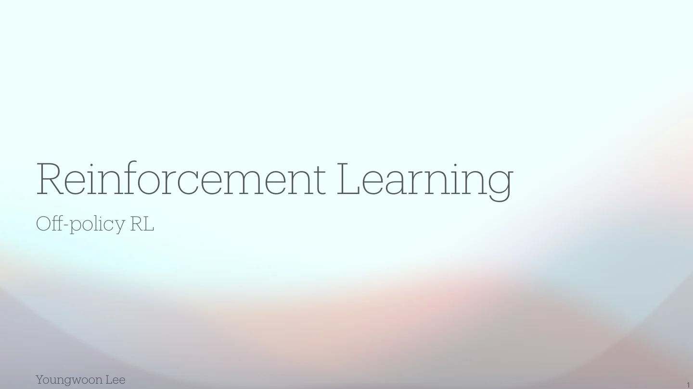<span class="zoom-hint">확대해서 보기 ↗</span></button><figcaption>슬라이드 01</figcaption></figure><div class="explanation"><div class="slide-reading"><p class="reading-kicker">DQN에서 연속 제어로 · 슬라이드 01</p><p>표지에서 이 강의의 주제를 확인하고, 뒤따르는 예시가 어떤 의사결정 문제를 설명하는지 질문을 세워 둡니다.</p><details><summary>개념 전개 펼치기</summary><p>DQN은 행동 수가 작고 유한할 때 출력층에서 모든 Q값을 계산한다. 연속 행동에서는 매번 고차원 최적화가 필요하므로 actor가 optimizer 역할을 신경망으로 근사한다. target network와 replay buffer는 그대로 중요하지만 정책 자체도 target으로 관리한다.</p>
</details></div></div></div></section><section class="slide" id="s02"><div class="slide-heading"><span class="slide-index">05-1 / 02</span><h2>Plan for today</h2></div><div class="slide-grid"><figure class="slide-figure"><button class="slide-image-button" data-zoom-src="../assets/slides/05-1_off_policy_rl/02.webp" data-zoom-label="05-1장 슬라이드 02">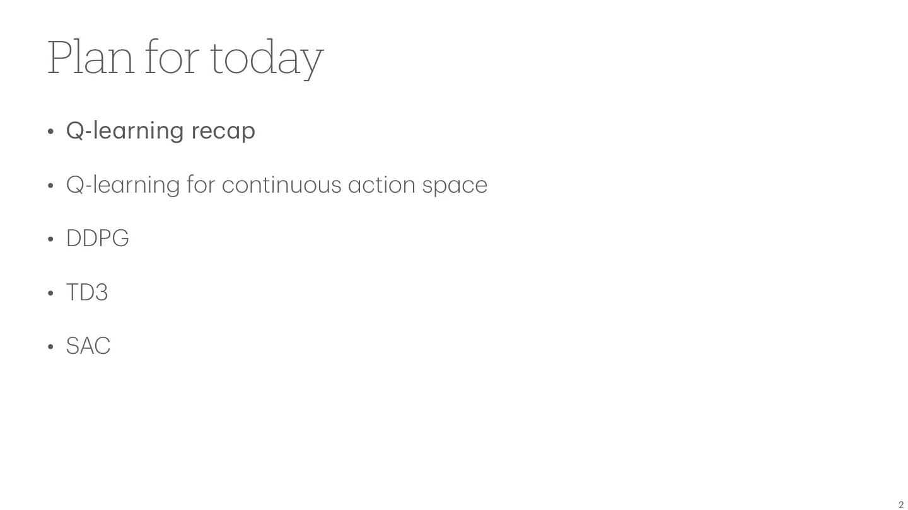<span class="zoom-hint">확대해서 보기 ↗</span></button><figcaption>슬라이드 02</figcaption></figure><div class="explanation"><div class="slide-reading"><p class="reading-kicker">DQN에서 연속 제어로 · 슬라이드 02</p><p>오늘의 목차는 개념의 순서를 보여 줍니다. 각 항목을 읽을 때 앞에서 배운 도구가 다음 알고리즘의 어떤 약점을 해결하는지 연결합니다.</p><details><summary>개념 전개 펼치기</summary><p>DQN은 행동 수가 작고 유한할 때 출력층에서 모든 Q값을 계산한다. 연속 행동에서는 매번 고차원 최적화가 필요하므로 actor가 optimizer 역할을 신경망으로 근사한다. target network와 replay buffer는 그대로 중요하지만 정책 자체도 target으로 관리한다.</p>
</details></div></div></div></section><section class="slide" id="s03"><div class="slide-heading"><span class="slide-index">05-1 / 03</span><h2>Policy is improved based on criterion :</h2></div><div class="slide-grid"><figure class="slide-figure"><button class="slide-image-button" data-zoom-src="../assets/slides/05-1_off_policy_rl/03.webp" data-zoom-label="05-1장 슬라이드 03"><span class="zoom-hint">확대해서 보기 ↗</span></button><figcaption>슬라이드 03</figcaption></figure><div class="explanation"><div class="slide-reading"><p class="reading-kicker">DQN에서 연속 제어로 · 슬라이드 03</p><p>슬라이드의 정의와 그림을 바로 앞·뒤 페이지의 식과 연결합니다. 기호의 조건부 대상, 학습 데이터가 온 정책, 그리고 업데이트에서 고정된 값이 무엇인지 표시해 보세요.</p><details><summary>개념 전개 펼치기</summary><p>DQN은 행동 수가 작고 유한할 때 출력층에서 모든 Q값을 계산한다. 연속 행동에서는 매번 고차원 최적화가 필요하므로 actor가 optimizer 역할을 신경망으로 근사한다. target network와 replay buffer는 그대로 중요하지만 정책 자체도 target으로 관리한다.</p>
</details></div></div></div></section><section class="slide" id="s04"><div class="slide-heading"><span class="slide-index">05-1 / 04</span><h2>Bellman equation</h2></div><div class="slide-grid"><figure class="slide-figure"><button class="slide-image-button" data-zoom-src="../assets/slides/05-1_off_policy_rl/04.webp" data-zoom-label="05-1장 슬라이드 04">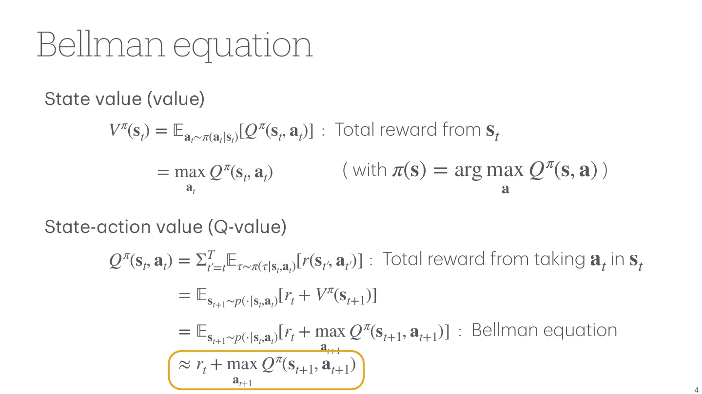<span class="zoom-hint">확대해서 보기 ↗</span></button><figcaption>슬라이드 04</figcaption></figure><div class="explanation"><div class="slide-reading"><p class="reading-kicker">DQN에서 연속 제어로 · 슬라이드 04</p><p>슬라이드의 정의와 그림을 바로 앞·뒤 페이지의 식과 연결합니다. 기호의 조건부 대상, 학습 데이터가 온 정책, 그리고 업데이트에서 고정된 값이 무엇인지 표시해 보세요.</p><details><summary>개념 전개 펼치기</summary><p>DQN은 행동 수가 작고 유한할 때 출력층에서 모든 Q값을 계산한다. 연속 행동에서는 매번 고차원 최적화가 필요하므로 actor가 optimizer 역할을 신경망으로 근사한다. target network와 replay buffer는 그대로 중요하지만 정책 자체도 target으로 관리한다.</p>
</details></div></div></div></section><section class="slide" id="s05"><div class="slide-heading"><span class="slide-index">05-1 / 05</span><h2>Problems in Q-learning</h2></div><div class="slide-grid"><figure class="slide-figure"><button class="slide-image-button" data-zoom-src="../assets/slides/05-1_off_policy_rl/05.webp" data-zoom-label="05-1장 슬라이드 05">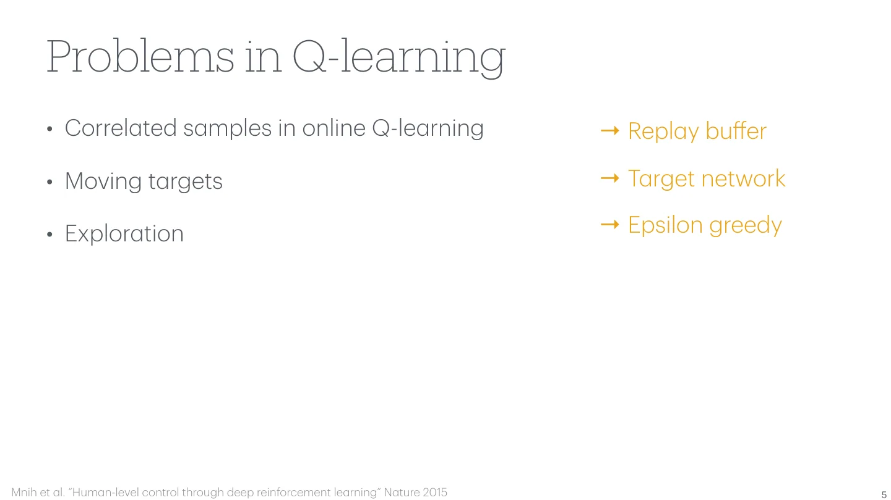<span class="zoom-hint">확대해서 보기 ↗</span></button><figcaption>슬라이드 05</figcaption></figure><div class="explanation"><div class="slide-reading"><p class="reading-kicker">DQN에서 연속 제어로 · 슬라이드 05</p><p>슬라이드의 정의와 그림을 바로 앞·뒤 페이지의 식과 연결합니다. 기호의 조건부 대상, 학습 데이터가 온 정책, 그리고 업데이트에서 고정된 값이 무엇인지 표시해 보세요.</p><details><summary>개념 전개 펼치기</summary><p>DQN은 행동 수가 작고 유한할 때 출력층에서 모든 Q값을 계산한다. 연속 행동에서는 매번 고차원 최적화가 필요하므로 actor가 optimizer 역할을 신경망으로 근사한다. target network와 replay buffer는 그대로 중요하지만 정책 자체도 target으로 관리한다.</p>
</details></div><figure class="concept-figure">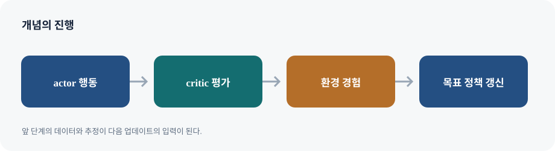<figcaption>연속 제어: DDPG, TD3, SAC의 핵심 구조</figcaption></figure></div></div></section><section class="slide" id="s06"><div class="slide-heading"><span class="slide-index">05-1 / 06</span><h2>Deep Q-Network (DQN)</h2></div><div class="slide-grid"><figure class="slide-figure"><button class="slide-image-button" data-zoom-src="../assets/slides/05-1_off_policy_rl/06.webp" data-zoom-label="05-1장 슬라이드 06">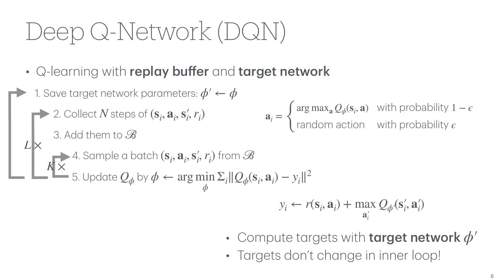<span class="zoom-hint">확대해서 보기 ↗</span></button><figcaption>슬라이드 06</figcaption></figure><div class="explanation"><div class="slide-reading"><p class="reading-kicker">DQN에서 연속 제어로 · 슬라이드 06</p><p>슬라이드의 정의와 그림을 바로 앞·뒤 페이지의 식과 연결합니다. 기호의 조건부 대상, 학습 데이터가 온 정책, 그리고 업데이트에서 고정된 값이 무엇인지 표시해 보세요.</p><details><summary>개념 전개 펼치기</summary><p>DQN은 행동 수가 작고 유한할 때 출력층에서 모든 Q값을 계산한다. 연속 행동에서는 매번 고차원 최적화가 필요하므로 actor가 optimizer 역할을 신경망으로 근사한다. target network와 replay buffer는 그대로 중요하지만 정책 자체도 target으로 관리한다.</p>
</details></div></div></div></section><section class="slide" id="s07"><div class="slide-heading"><span class="slide-index">05-1 / 07</span><h2>Improvements over DQN</h2></div><div class="slide-grid"><figure class="slide-figure"><button class="slide-image-button" data-zoom-src="../assets/slides/05-1_off_policy_rl/07.webp" data-zoom-label="05-1장 슬라이드 07">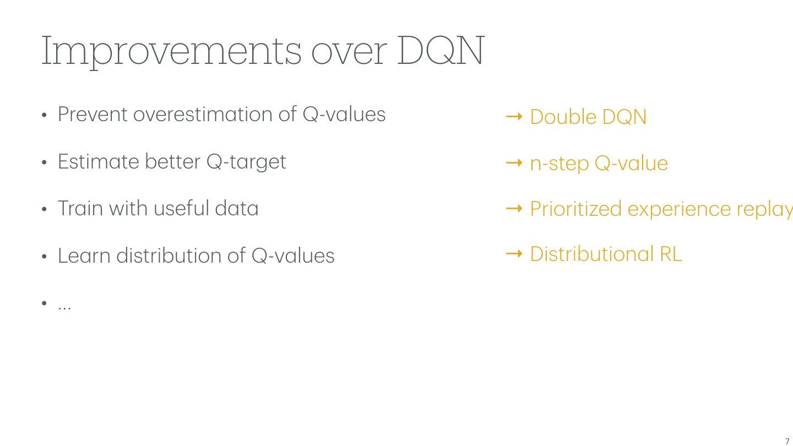<span class="zoom-hint">확대해서 보기 ↗</span></button><figcaption>슬라이드 07</figcaption></figure><div class="explanation"><div class="slide-reading"><p class="reading-kicker">DQN에서 연속 제어로 · 슬라이드 07</p><p>슬라이드의 정의와 그림을 바로 앞·뒤 페이지의 식과 연결합니다. 기호의 조건부 대상, 학습 데이터가 온 정책, 그리고 업데이트에서 고정된 값이 무엇인지 표시해 보세요.</p><details><summary>개념 전개 펼치기</summary><p>DQN은 행동 수가 작고 유한할 때 출력층에서 모든 Q값을 계산한다. 연속 행동에서는 매번 고차원 최적화가 필요하므로 actor가 optimizer 역할을 신경망으로 근사한다. target network와 replay buffer는 그대로 중요하지만 정책 자체도 target으로 관리한다.</p>
</details></div></div></div></section><section class="slide" id="s08"><div class="slide-heading"><span class="slide-index">05-1 / 08</span><h2>Overestimation in Q-learning</h2></div><div class="slide-grid"><figure class="slide-figure"><button class="slide-image-button" data-zoom-src="../assets/slides/05-1_off_policy_rl/08.webp" data-zoom-label="05-1장 슬라이드 08">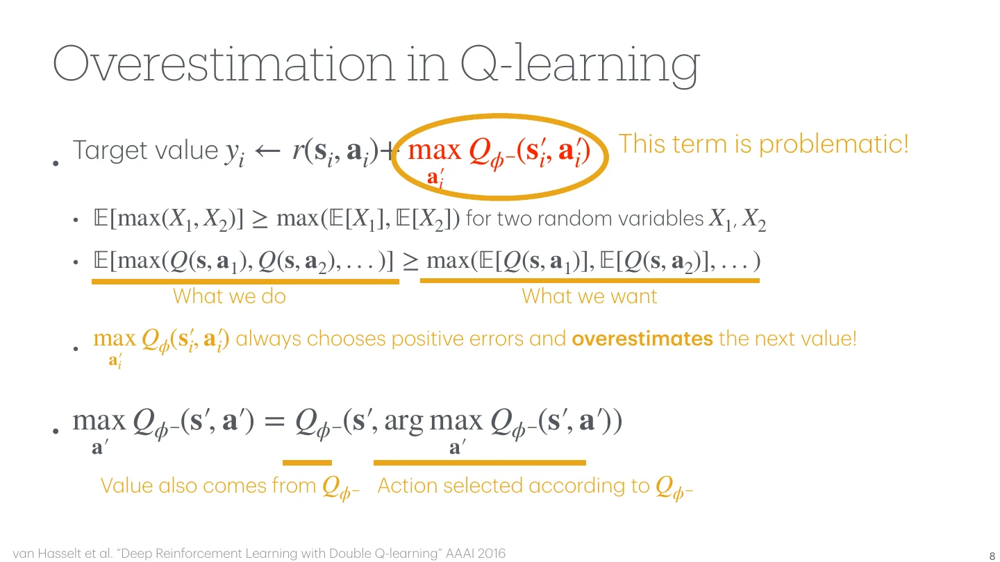<span class="zoom-hint">확대해서 보기 ↗</span></button><figcaption>슬라이드 08</figcaption></figure><div class="explanation"><div class="slide-reading"><p class="reading-kicker">DQN에서 연속 제어로 · 슬라이드 08</p><p>TD3는 두 critic의 작은 값을 쓰고 target 행동을 평활화하며 actor 업데이트를 늦춥니다. 각 장치가 서로 다른 과대추정·오차 전파 원인을 겨냥합니다.</p><details><summary>개념 전개 펼치기</summary><p>DQN은 행동 수가 작고 유한할 때 출력층에서 모든 Q값을 계산한다. 연속 행동에서는 매번 고차원 최적화가 필요하므로 actor가 optimizer 역할을 신경망으로 근사한다. target network와 replay buffer는 그대로 중요하지만 정책 자체도 target으로 관리한다.</p>
</details></div></div></div></section><section class="slide" id="s09"><div class="slide-heading"><span class="slide-index">05-1 / 09</span><h2>Double DQN (DDQN)</h2></div><div class="slide-grid"><figure class="slide-figure"><button class="slide-image-button" data-zoom-src="../assets/slides/05-1_off_policy_rl/09.webp" data-zoom-label="05-1장 슬라이드 09">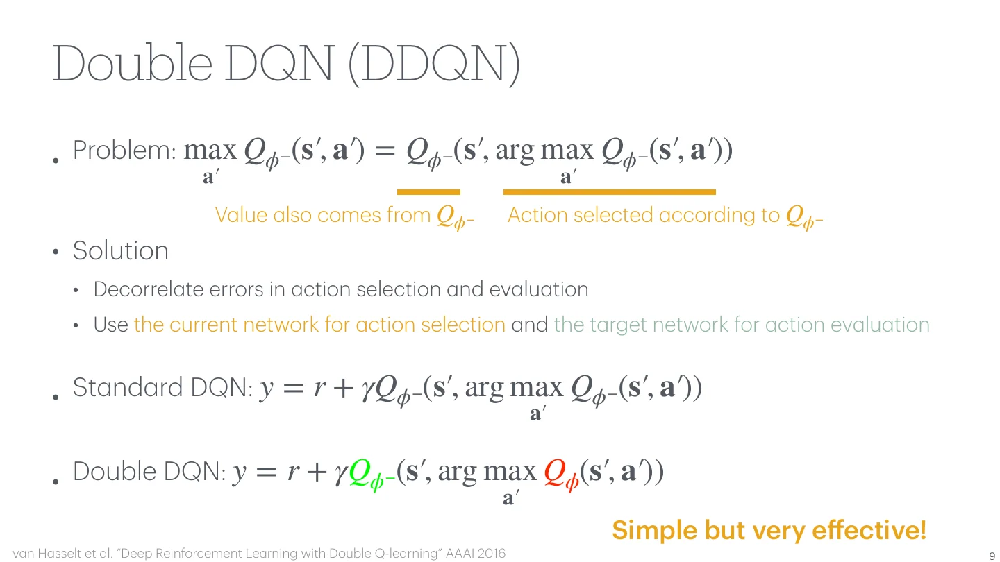<span class="zoom-hint">확대해서 보기 ↗</span></button><figcaption>슬라이드 09</figcaption></figure><div class="explanation"><div class="slide-reading"><p class="reading-kicker">DQN에서 연속 제어로 · 슬라이드 09</p><p>슬라이드의 정의와 그림을 바로 앞·뒤 페이지의 식과 연결합니다. 기호의 조건부 대상, 학습 데이터가 온 정책, 그리고 업데이트에서 고정된 값이 무엇인지 표시해 보세요.</p><details><summary>개념 전개 펼치기</summary><p>DQN은 행동 수가 작고 유한할 때 출력층에서 모든 Q값을 계산한다. 연속 행동에서는 매번 고차원 최적화가 필요하므로 actor가 optimizer 역할을 신경망으로 근사한다. target network와 replay buffer는 그대로 중요하지만 정책 자체도 target으로 관리한다.</p>
</details></div></div></div></section><section class="slide" id="s10"><div class="slide-heading"><span class="slide-index">05-1 / 10</span><h2>Improvements over DQN</h2></div><div class="slide-grid"><figure class="slide-figure"><button class="slide-image-button" data-zoom-src="../assets/slides/05-1_off_policy_rl/10.webp" data-zoom-label="05-1장 슬라이드 10">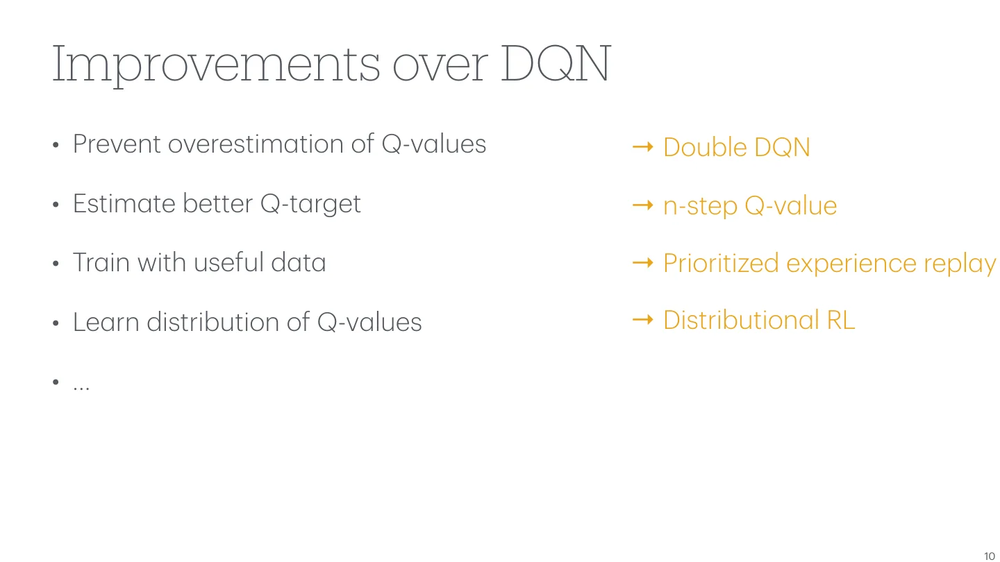<span class="zoom-hint">확대해서 보기 ↗</span></button><figcaption>슬라이드 10</figcaption></figure><div class="explanation"><div class="slide-reading"><p class="reading-kicker">DQN에서 연속 제어로 · 슬라이드 10</p><p>슬라이드의 정의와 그림을 바로 앞·뒤 페이지의 식과 연결합니다. 기호의 조건부 대상, 학습 데이터가 온 정책, 그리고 업데이트에서 고정된 값이 무엇인지 표시해 보세요.</p><details><summary>개념 전개 펼치기</summary><p>DQN은 행동 수가 작고 유한할 때 출력층에서 모든 Q값을 계산한다. 연속 행동에서는 매번 고차원 최적화가 필요하므로 actor가 optimizer 역할을 신경망으로 근사한다. target network와 replay buffer는 그대로 중요하지만 정책 자체도 target으로 관리한다.</p>
</details></div></div></div></section><section class="slide" id="s11"><div class="slide-heading"><span class="slide-index">05-1 / 11</span><h2>Fitted Q-iteration algorithm (Q-learning)</h2></div><div class="slide-grid"><figure class="slide-figure"><button class="slide-image-button" data-zoom-src="../assets/slides/05-1_off_policy_rl/11.webp" data-zoom-label="05-1장 슬라이드 11">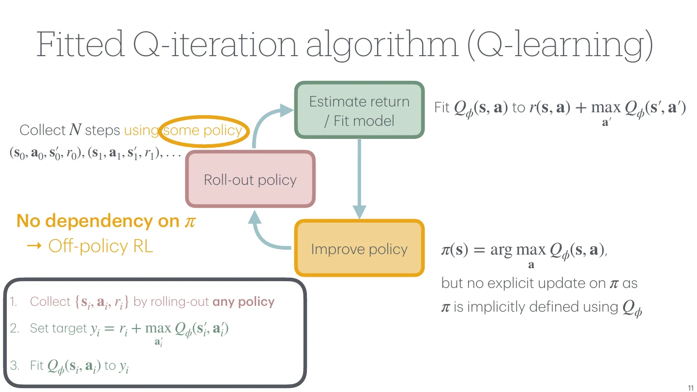<span class="zoom-hint">확대해서 보기 ↗</span></button><figcaption>슬라이드 11</figcaption></figure><div class="explanation"><div class="slide-reading"><p class="reading-kicker">DQN에서 연속 제어로 · 슬라이드 11</p><p>슬라이드의 정의와 그림을 바로 앞·뒤 페이지의 식과 연결합니다. 기호의 조건부 대상, 학습 데이터가 온 정책, 그리고 업데이트에서 고정된 값이 무엇인지 표시해 보세요.</p><details><summary>개념 전개 펼치기</summary><p>DQN은 행동 수가 작고 유한할 때 출력층에서 모든 Q값을 계산한다. 연속 행동에서는 매번 고차원 최적화가 필요하므로 actor가 optimizer 역할을 신경망으로 근사한다. target network와 replay buffer는 그대로 중요하지만 정책 자체도 target으로 관리한다.</p>
</details></div></div></div></section><section class="slide" id="s12"><div class="slide-heading"><span class="slide-index">05-1 / 12</span><h2>Plan for today</h2></div><div class="slide-grid"><figure class="slide-figure"><button class="slide-image-button" data-zoom-src="../assets/slides/05-1_off_policy_rl/12.webp" data-zoom-label="05-1장 슬라이드 12"><span class="zoom-hint">확대해서 보기 ↗</span></button><figcaption>슬라이드 12</figcaption></figure><div class="explanation"><div class="slide-reading"><p class="reading-kicker">DQN에서 연속 제어로 · 슬라이드 12</p><p>오늘의 목차는 개념의 순서를 보여 줍니다. 각 항목을 읽을 때 앞에서 배운 도구가 다음 알고리즘의 어떤 약점을 해결하는지 연결합니다.</p><details><summary>개념 전개 펼치기</summary><p>DQN은 행동 수가 작고 유한할 때 출력층에서 모든 Q값을 계산한다. 연속 행동에서는 매번 고차원 최적화가 필요하므로 actor가 optimizer 역할을 신경망으로 근사한다. target network와 replay buffer는 그대로 중요하지만 정책 자체도 target으로 관리한다.</p>
</details></div></div></div></section><section class="slide" id="s13"><div class="slide-heading"><span class="slide-index">05-1 / 13</span><h2>DQN for continuous aaction spaces?</h2></div><div class="slide-grid"><figure class="slide-figure"><button class="slide-image-button" data-zoom-src="../assets/slides/05-1_off_policy_rl/13.webp" data-zoom-label="05-1장 슬라이드 13">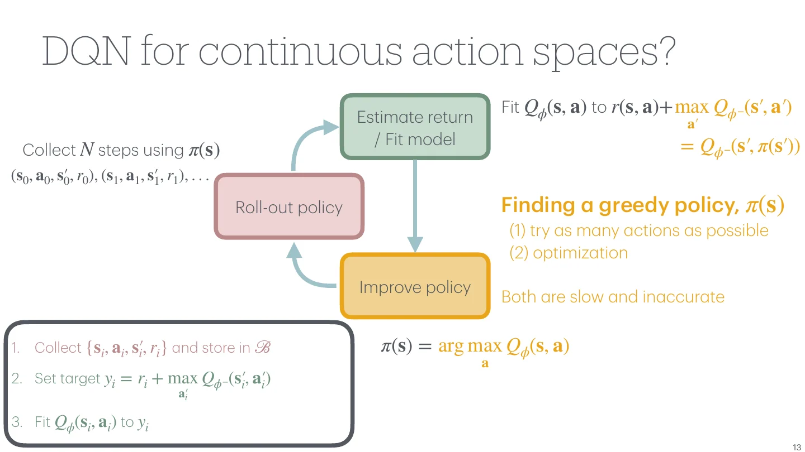<span class="zoom-hint">확대해서 보기 ↗</span></button><figcaption>슬라이드 13</figcaption></figure><div class="explanation"><div class="slide-reading"><p class="reading-kicker">DDPG의 actor–critic 업데이트 · 슬라이드 13</p><p>슬라이드의 정의와 그림을 바로 앞·뒤 페이지의 식과 연결합니다. 기호의 조건부 대상, 학습 데이터가 온 정책, 그리고 업데이트에서 고정된 값이 무엇인지 표시해 보세요.</p><details><summary>개념 전개 펼치기</summary><p>critic은 Bellman target에 회귀하고 actor는 critic의 행동 기울기를 따라 Q를 높인다. actor gradient는 <span class="math-inline">\(Q(s,\mu_	heta(s))\)</span>에 chain rule을 적용한 것이다. action exploration noise는 행동 수집용이며 정책 분포의 entropy와는 구분된다. soft target update는 <span class="math-inline">\(ar\phi\leftarrow(1-	au)ar\phi+	au\phi\)</span>처럼 천천히 추적한다.</p>
</details></div></div></div></section><section class="slide" id="s14"><div class="slide-heading"><span class="slide-index">05-1 / 14</span><h2>Finding greedy policy with continuous actions</h2></div><div class="slide-grid"><figure class="slide-figure"><button class="slide-image-button" data-zoom-src="../assets/slides/05-1_off_policy_rl/14.webp" data-zoom-label="05-1장 슬라이드 14">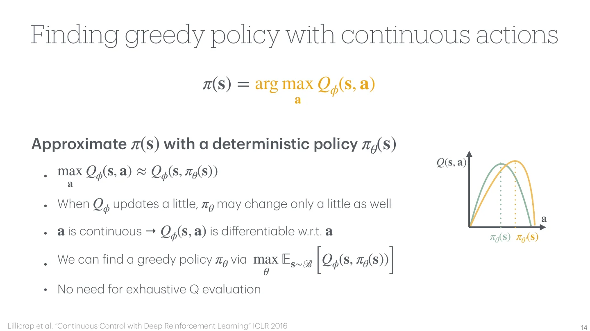<span class="zoom-hint">확대해서 보기 ↗</span></button><figcaption>슬라이드 14</figcaption></figure><div class="explanation"><div class="slide-reading"><p class="reading-kicker">DDPG의 actor–critic 업데이트 · 슬라이드 14</p><p>연속 행동에는 후보를 모두 열거하는 argmax가 불가능합니다. actor가 후보 행동을 내고 critic의 행동 기울기로 정책을 개선합니다.</p><details><summary>개념 전개 펼치기</summary><p>critic은 Bellman target에 회귀하고 actor는 critic의 행동 기울기를 따라 Q를 높인다. actor gradient는 <span class="math-inline">\(Q(s,\mu_	heta(s))\)</span>에 chain rule을 적용한 것이다. action exploration noise는 행동 수집용이며 정책 분포의 entropy와는 구분된다. soft target update는 <span class="math-inline">\(ar\phi\leftarrow(1-	au)ar\phi+	au\phi\)</span>처럼 천천히 추적한다.</p>
</details></div></div></div></section><section class="slide" id="s15"><div class="slide-heading"><span class="slide-index">05-1 / 15</span><h2>Deep Deterministic Policy Gradient</h2></div><div class="slide-grid"><figure class="slide-figure"><button class="slide-image-button" data-zoom-src="../assets/slides/05-1_off_policy_rl/15.webp" data-zoom-label="05-1장 슬라이드 15">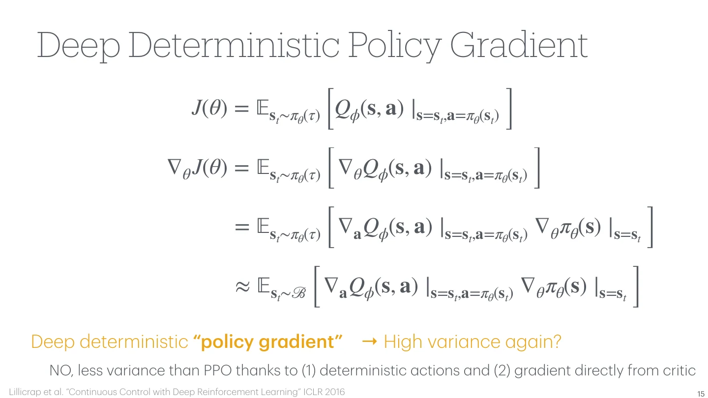<span class="zoom-hint">확대해서 보기 ↗</span></button><figcaption>슬라이드 15</figcaption></figure><div class="explanation"><div class="slide-reading"><p class="reading-kicker">DDPG의 actor–critic 업데이트 · 슬라이드 15</p><p>DDPG는 replay 데이터를 재사용하는 off-policy deterministic actor–critic입니다. actor의 정책기울기는 Q의 행동 방향 기울기를 정책 매개변수 방향으로 연쇄 전달합니다.</p><details><summary>개념 전개 펼치기</summary><p>critic은 Bellman target에 회귀하고 actor는 critic의 행동 기울기를 따라 Q를 높인다. actor gradient는 <span class="math-inline">\(Q(s,\mu_	heta(s))\)</span>에 chain rule을 적용한 것이다. action exploration noise는 행동 수집용이며 정책 분포의 entropy와는 구분된다. soft target update는 <span class="math-inline">\(ar\phi\leftarrow(1-	au)ar\phi+	au\phi\)</span>처럼 천천히 추적한다.</p>
</details></div></div></div></section><section class="slide" id="s16"><div class="slide-heading"><span class="slide-index">05-1 / 16</span><h2>Soft target update</h2></div><div class="slide-grid"><figure class="slide-figure"><button class="slide-image-button" data-zoom-src="../assets/slides/05-1_off_policy_rl/16.webp" data-zoom-label="05-1장 슬라이드 16">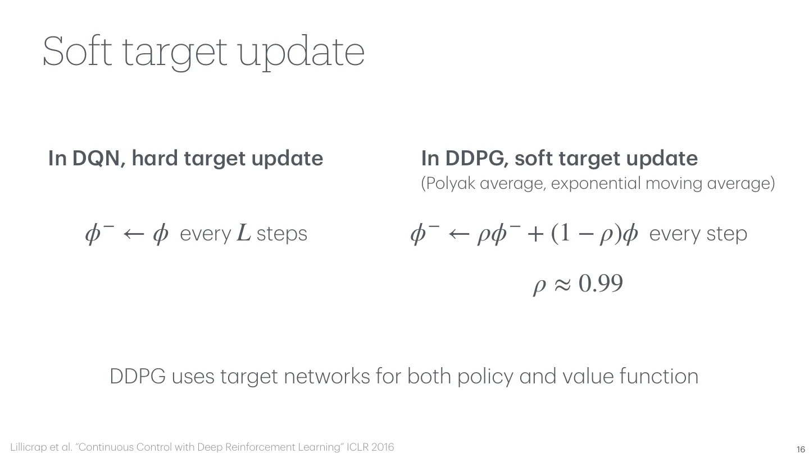<span class="zoom-hint">확대해서 보기 ↗</span></button><figcaption>슬라이드 16</figcaption></figure><div class="explanation"><div class="slide-reading"><p class="reading-kicker">DDPG의 actor–critic 업데이트 · 슬라이드 16</p><p>soft target update는 새 온라인 가중치를 작은 비율 τ만큼 target에 섞습니다. τ가 작으면 목표가 안정적이지만 적응은 느립니다.</p><details><summary>개념 전개 펼치기</summary><p>critic은 Bellman target에 회귀하고 actor는 critic의 행동 기울기를 따라 Q를 높인다. actor gradient는 <span class="math-inline">\(Q(s,\mu_	heta(s))\)</span>에 chain rule을 적용한 것이다. action exploration noise는 행동 수집용이며 정책 분포의 entropy와는 구분된다. soft target update는 <span class="math-inline">\(ar\phi\leftarrow(1-	au)ar\phi+	au\phi\)</span>처럼 천천히 추적한다.</p>
</details></div></div></div></section><section class="slide" id="s17"><div class="slide-heading"><span class="slide-index">05-1 / 17</span><h2>Deep deterministic policy gradient (DDPG)</h2></div><div class="slide-grid"><figure class="slide-figure"><button class="slide-image-button" data-zoom-src="../assets/slides/05-1_off_policy_rl/17.webp" data-zoom-label="05-1장 슬라이드 17">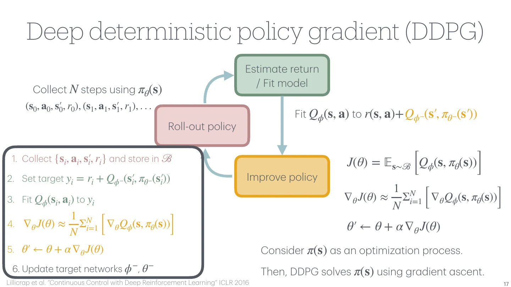<span class="zoom-hint">확대해서 보기 ↗</span></button><figcaption>슬라이드 17</figcaption></figure><div class="explanation"><div class="slide-reading"><p class="reading-kicker">DDPG의 actor–critic 업데이트 · 슬라이드 17</p><p>DDPG는 replay 데이터를 재사용하는 off-policy deterministic actor–critic입니다. actor의 정책기울기는 Q의 행동 방향 기울기를 정책 매개변수 방향으로 연쇄 전달합니다.</p><details><summary>개념 전개 펼치기</summary><p>critic은 Bellman target에 회귀하고 actor는 critic의 행동 기울기를 따라 Q를 높인다. actor gradient는 <span class="math-inline">\(Q(s,\mu_	heta(s))\)</span>에 chain rule을 적용한 것이다. action exploration noise는 행동 수집용이며 정책 분포의 entropy와는 구분된다. soft target update는 <span class="math-inline">\(ar\phi\leftarrow(1-	au)ar\phi+	au\phi\)</span>처럼 천천히 추적한다.</p>
</details></div></div></div></section><section class="slide" id="s18"><div class="slide-heading"><span class="slide-index">05-1 / 18</span><h2>Epsilon-greedy exploration</h2></div><div class="slide-grid"><figure class="slide-figure"><button class="slide-image-button" data-zoom-src="../assets/slides/05-1_off_policy_rl/18.webp" data-zoom-label="05-1장 슬라이드 18">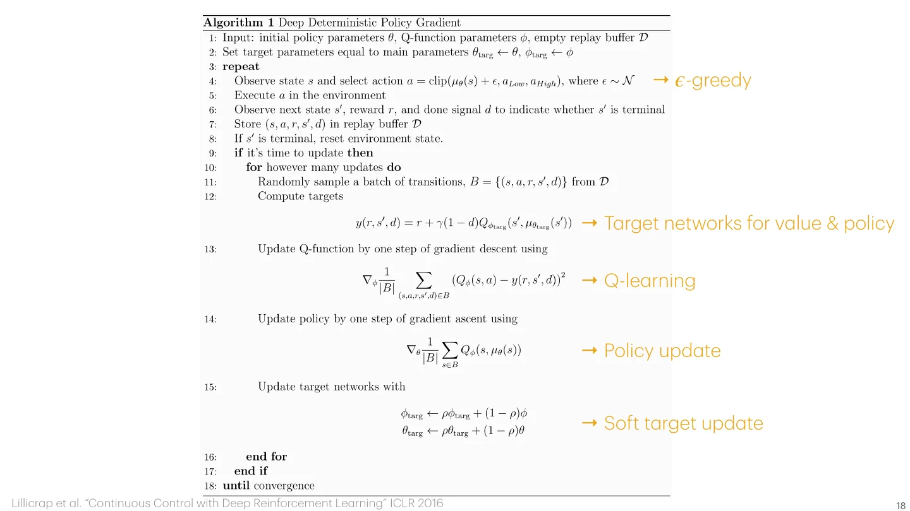<span class="zoom-hint">확대해서 보기 ↗</span></button><figcaption>슬라이드 18</figcaption></figure><div class="explanation"><div class="slide-reading"><p class="reading-kicker">DDPG의 actor–critic 업데이트 · 슬라이드 18</p><p>슬라이드의 정의와 그림을 바로 앞·뒤 페이지의 식과 연결합니다. 기호의 조건부 대상, 학습 데이터가 온 정책, 그리고 업데이트에서 고정된 값이 무엇인지 표시해 보세요.</p><details><summary>개념 전개 펼치기</summary><p>critic은 Bellman target에 회귀하고 actor는 critic의 행동 기울기를 따라 Q를 높인다. actor gradient는 <span class="math-inline">\(Q(s,\mu_	heta(s))\)</span>에 chain rule을 적용한 것이다. action exploration noise는 행동 수집용이며 정책 분포의 entropy와는 구분된다. soft target update는 <span class="math-inline">\(ar\phi\leftarrow(1-	au)ar\phi+	au\phi\)</span>처럼 천천히 추적한다.</p>
</details></div></div></div></section><section class="slide" id="s19"><div class="slide-heading"><span class="slide-index">05-1 / 19</span><h2>Summary of DDPG</h2></div><div class="slide-grid"><figure class="slide-figure"><button class="slide-image-button" data-zoom-src="../assets/slides/05-1_off_policy_rl/19.webp" data-zoom-label="05-1장 슬라이드 19">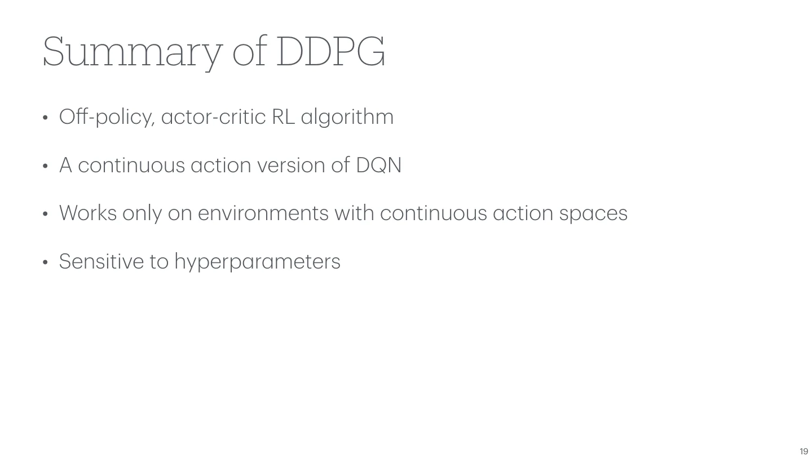<span class="zoom-hint">확대해서 보기 ↗</span></button><figcaption>슬라이드 19</figcaption></figure><div class="explanation"><div class="slide-reading"><p class="reading-kicker">DDPG의 actor–critic 업데이트 · 슬라이드 19</p><p>요약의 항목을 정의·목적함수·데이터 요구량·주요 실패 원인으로 나누어 정리합니다. 이름이 비슷한 알고리즘의 차이는 이 네 축에서 드러납니다.</p><details><summary>개념 전개 펼치기</summary><p>critic은 Bellman target에 회귀하고 actor는 critic의 행동 기울기를 따라 Q를 높인다. actor gradient는 <span class="math-inline">\(Q(s,\mu_	heta(s))\)</span>에 chain rule을 적용한 것이다. action exploration noise는 행동 수집용이며 정책 분포의 entropy와는 구분된다. soft target update는 <span class="math-inline">\(ar\phi\leftarrow(1-	au)ar\phi+	au\phi\)</span>처럼 천천히 추적한다.</p>
</details></div></div></div></section><section class="slide" id="s20"><div class="slide-heading"><span class="slide-index">05-1 / 20</span><h2>Plan for today</h2></div><div class="slide-grid"><figure class="slide-figure"><button class="slide-image-button" data-zoom-src="../assets/slides/05-1_off_policy_rl/20.webp" data-zoom-label="05-1장 슬라이드 20">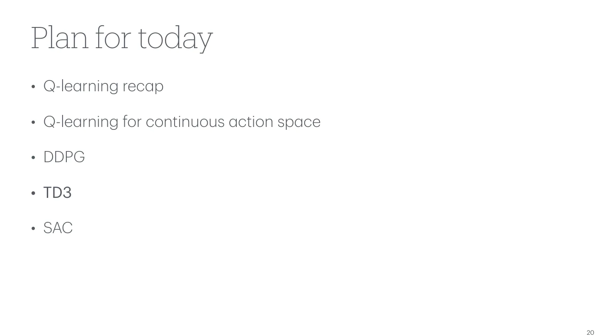<span class="zoom-hint">확대해서 보기 ↗</span></button><figcaption>슬라이드 20</figcaption></figure><div class="explanation"><div class="slide-reading"><p class="reading-kicker">TD3의 세 안정화 장치 · 슬라이드 20</p><p>오늘의 목차는 개념의 순서를 보여 줍니다. 각 항목을 읽을 때 앞에서 배운 도구가 다음 알고리즘의 어떤 약점을 해결하는지 연결합니다.</p><details><summary>개념 전개 펼치기</summary><p>clipped double Q는 두 target critic의 최소값, target smoothing은 다음 행동 주변의 국소 평균화, delayed update는 critic에 더 많은 보정 기회를 준다. 작은 편향을 받아 큰 과대추정 편향을 줄이는 trade-off다. DDPG와 TD3 모두 deterministic actor이므로 탐험 전략이 필요하다.</p>
</details></div></div></div></section><section class="slide" id="s21"><div class="slide-heading"><span class="slide-index">05-1 / 21</span><h2>DDPG also has overestimation in Q</h2></div><div class="slide-grid"><figure class="slide-figure"><button class="slide-image-button" data-zoom-src="../assets/slides/05-1_off_policy_rl/21.webp" data-zoom-label="05-1장 슬라이드 21">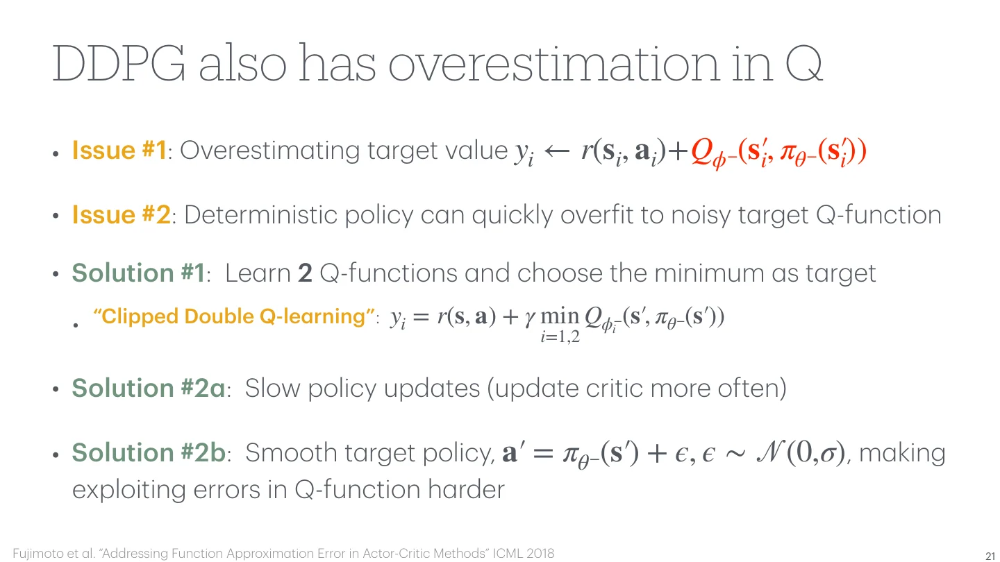<span class="zoom-hint">확대해서 보기 ↗</span></button><figcaption>슬라이드 21</figcaption></figure><div class="explanation"><div class="slide-reading"><p class="reading-kicker">TD3의 세 안정화 장치 · 슬라이드 21</p><p>DDPG는 replay 데이터를 재사용하는 off-policy deterministic actor–critic입니다. actor의 정책기울기는 Q의 행동 방향 기울기를 정책 매개변수 방향으로 연쇄 전달합니다.</p><details><summary>개념 전개 펼치기</summary><p>clipped double Q는 두 target critic의 최소값, target smoothing은 다음 행동 주변의 국소 평균화, delayed update는 critic에 더 많은 보정 기회를 준다. 작은 편향을 받아 큰 과대추정 편향을 줄이는 trade-off다. DDPG와 TD3 모두 deterministic actor이므로 탐험 전략이 필요하다.</p>
</details></div></div></div></section><section class="slide" id="s22"><div class="slide-heading"><span class="slide-index">05-1 / 22</span><h2>DDPG also has overestimation in Q</h2></div><div class="slide-grid"><figure class="slide-figure"><button class="slide-image-button" data-zoom-src="../assets/slides/05-1_off_policy_rl/22.webp" data-zoom-label="05-1장 슬라이드 22">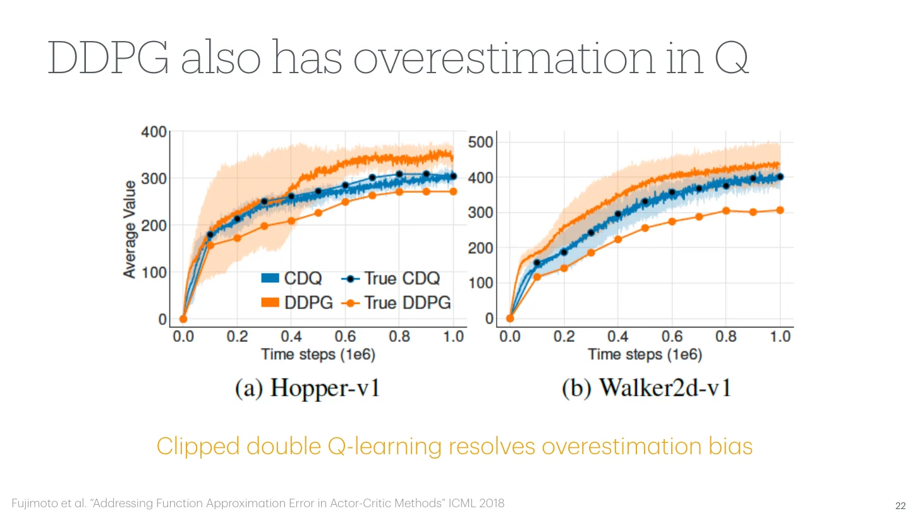<span class="zoom-hint">확대해서 보기 ↗</span></button><figcaption>슬라이드 22</figcaption></figure><div class="explanation"><div class="slide-reading"><p class="reading-kicker">TD3의 세 안정화 장치 · 슬라이드 22</p><p>DDPG는 replay 데이터를 재사용하는 off-policy deterministic actor–critic입니다. actor의 정책기울기는 Q의 행동 방향 기울기를 정책 매개변수 방향으로 연쇄 전달합니다.</p><details><summary>개념 전개 펼치기</summary><p>clipped double Q는 두 target critic의 최소값, target smoothing은 다음 행동 주변의 국소 평균화, delayed update는 critic에 더 많은 보정 기회를 준다. 작은 편향을 받아 큰 과대추정 편향을 줄이는 trade-off다. DDPG와 TD3 모두 deterministic actor이므로 탐험 전략이 필요하다.</p>
</details></div></div></div></section><section class="slide" id="s23"><div class="slide-heading"><span class="slide-index">05-1 / 23</span><h2>Target policy smoothing</h2></div><div class="slide-grid"><figure class="slide-figure"><button class="slide-image-button" data-zoom-src="../assets/slides/05-1_off_policy_rl/23.webp" data-zoom-label="05-1장 슬라이드 23">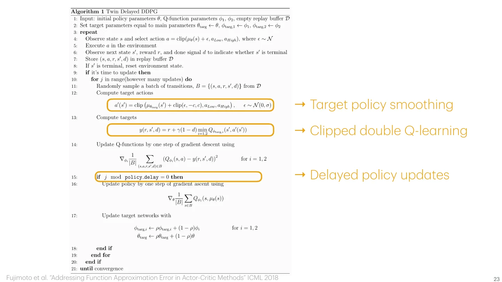<span class="zoom-hint">확대해서 보기 ↗</span></button><figcaption>슬라이드 23</figcaption></figure><div class="explanation"><div class="slide-reading"><p class="reading-kicker">TD3의 세 안정화 장치 · 슬라이드 23</p><p>TD3는 두 critic의 작은 값을 쓰고 target 행동을 평활화하며 actor 업데이트를 늦춥니다. 각 장치가 서로 다른 과대추정·오차 전파 원인을 겨냥합니다.</p><details><summary>개념 전개 펼치기</summary><p>clipped double Q는 두 target critic의 최소값, target smoothing은 다음 행동 주변의 국소 평균화, delayed update는 critic에 더 많은 보정 기회를 준다. 작은 편향을 받아 큰 과대추정 편향을 줄이는 trade-off다. DDPG와 TD3 모두 deterministic actor이므로 탐험 전략이 필요하다.</p>
</details></div></div></div></section><section class="slide" id="s24"><div class="slide-heading"><span class="slide-index">05-1 / 24</span><h2>Fujimoto et l. ddressing Funaction Approxim tion Error in Actor-Critic Meth</h2></div><div class="slide-grid"><figure class="slide-figure"><button class="slide-image-button" data-zoom-src="../assets/slides/05-1_off_policy_rl/24.webp" data-zoom-label="05-1장 슬라이드 24">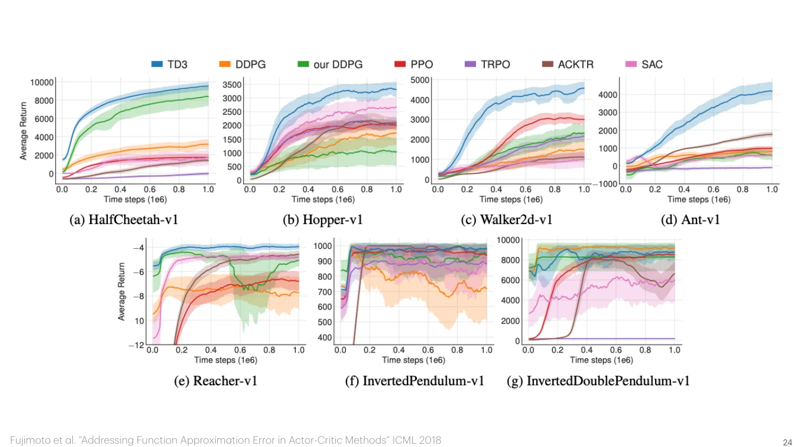<span class="zoom-hint">확대해서 보기 ↗</span></button><figcaption>슬라이드 24</figcaption></figure><div class="explanation"><div class="slide-reading"><p class="reading-kicker">TD3의 세 안정화 장치 · 슬라이드 24</p><p>슬라이드의 정의와 그림을 바로 앞·뒤 페이지의 식과 연결합니다. 기호의 조건부 대상, 학습 데이터가 온 정책, 그리고 업데이트에서 고정된 값이 무엇인지 표시해 보세요.</p><details><summary>개념 전개 펼치기</summary><p>clipped double Q는 두 target critic의 최소값, target smoothing은 다음 행동 주변의 국소 평균화, delayed update는 critic에 더 많은 보정 기회를 준다. 작은 편향을 받아 큰 과대추정 편향을 줄이는 trade-off다. DDPG와 TD3 모두 deterministic actor이므로 탐험 전략이 필요하다.</p>
</details></div></div></div></section><section class="slide" id="s25"><div class="slide-heading"><span class="slide-index">05-1 / 25</span><h2>Summary of TD3</h2></div><div class="slide-grid"><figure class="slide-figure"><button class="slide-image-button" data-zoom-src="../assets/slides/05-1_off_policy_rl/25.webp" data-zoom-label="05-1장 슬라이드 25">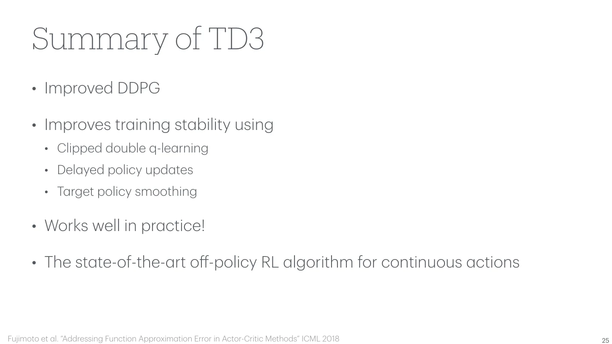<span class="zoom-hint">확대해서 보기 ↗</span></button><figcaption>슬라이드 25</figcaption></figure><div class="explanation"><div class="slide-reading"><p class="reading-kicker">TD3의 세 안정화 장치 · 슬라이드 25</p><p>요약의 항목을 정의·목적함수·데이터 요구량·주요 실패 원인으로 나누어 정리합니다. 이름이 비슷한 알고리즘의 차이는 이 네 축에서 드러납니다.</p><details><summary>개념 전개 펼치기</summary><p>clipped double Q는 두 target critic의 최소값, target smoothing은 다음 행동 주변의 국소 평균화, delayed update는 critic에 더 많은 보정 기회를 준다. 작은 편향을 받아 큰 과대추정 편향을 줄이는 trade-off다. DDPG와 TD3 모두 deterministic actor이므로 탐험 전략이 필요하다.</p>
</details></div></div></div></section><section class="slide" id="s26"><div class="slide-heading"><span class="slide-index">05-1 / 26</span><h2>Plan for today</h2></div><div class="slide-grid"><figure class="slide-figure"><button class="slide-image-button" data-zoom-src="../assets/slides/05-1_off_policy_rl/26.webp" data-zoom-label="05-1장 슬라이드 26"><span class="zoom-hint">확대해서 보기 ↗</span></button><figcaption>슬라이드 26</figcaption></figure><div class="explanation"><div class="slide-reading"><p class="reading-kicker">최대 엔트로피와 SAC · 슬라이드 26</p><p>오늘의 목차는 개념의 순서를 보여 줍니다. 각 항목을 읽을 때 앞에서 배운 도구가 다음 알고리즘의 어떤 약점을 해결하는지 연결합니다.</p><details><summary>개념 전개 펼치기</summary><p>엔트로피 <span class="math-inline">\(\mathcal H(\pi)=-\mathbb E[\log\pi(a\mid s)]\)</span>가 높으면 정책이 여러 행동에 확률을 분산한다. SAC의 soft Q는 미래 보상에 entropy value를 포함하며, twin critics와 target을 사용한다. 자동 온도 조정은 목표 entropy에 맞추어 <span class="math-inline">\(\alpha\)</span>를 학습한다. 이는 reward scale과 무관한 상수가 아니다. 국내 RAILab의 사족보행 제어 연구는 거칠고 미끄럽거나 변형되는 지면에서 실험해 모델 오차가 있는 현실 환경의 강건성을 다룬다. 시뮬레이터에서 평균 return만 높이는 것과 실물에서 낙상·접촉·센서 지연을 견디는 것은 별도의 검증 문제다.</p>
</details></div></div></div></section><section class="slide" id="s27"><div class="slide-heading"><span class="slide-index">05-1 / 27</span><h2>Can we use stochastic policy?</h2></div><div class="slide-grid"><figure class="slide-figure"><button class="slide-image-button" data-zoom-src="../assets/slides/05-1_off_policy_rl/27.webp" data-zoom-label="05-1장 슬라이드 27"><span class="zoom-hint">확대해서 보기 ↗</span></button><figcaption>슬라이드 27</figcaption></figure><div class="explanation"><div class="slide-reading"><p class="reading-kicker">최대 엔트로피와 SAC · 슬라이드 27</p><p>슬라이드의 정의와 그림을 바로 앞·뒤 페이지의 식과 연결합니다. 기호의 조건부 대상, 학습 데이터가 온 정책, 그리고 업데이트에서 고정된 값이 무엇인지 표시해 보세요.</p><details><summary>개념 전개 펼치기</summary><p>엔트로피 <span class="math-inline">\(\mathcal H(\pi)=-\mathbb E[\log\pi(a\mid s)]\)</span>가 높으면 정책이 여러 행동에 확률을 분산한다. SAC의 soft Q는 미래 보상에 entropy value를 포함하며, twin critics와 target을 사용한다. 자동 온도 조정은 목표 entropy에 맞추어 <span class="math-inline">\(\alpha\)</span>를 학습한다. 이는 reward scale과 무관한 상수가 아니다. 국내 RAILab의 사족보행 제어 연구는 거칠고 미끄럽거나 변형되는 지면에서 실험해 모델 오차가 있는 현실 환경의 강건성을 다룬다. 시뮬레이터에서 평균 return만 높이는 것과 실물에서 낙상·접촉·센서 지연을 견디는 것은 별도의 검증 문제다.</p>
</details></div></div></div></section><section class="slide" id="s28"><div class="slide-heading"><span class="slide-index">05-1 / 28</span><h2>Maximum entropy RL</h2></div><div class="slide-grid"><figure class="slide-figure"><button class="slide-image-button" data-zoom-src="../assets/slides/05-1_off_policy_rl/28.webp" data-zoom-label="05-1장 슬라이드 28">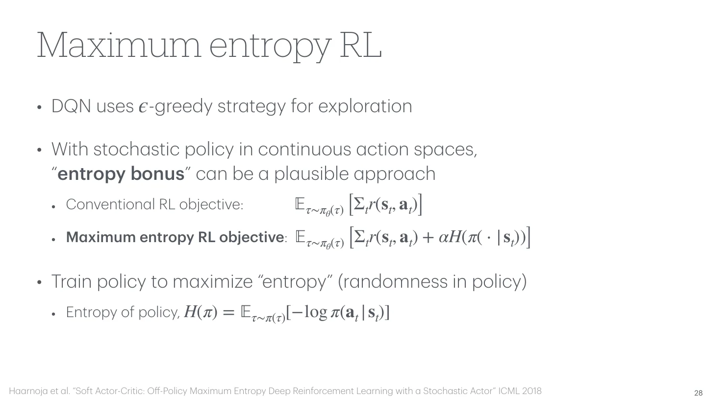<span class="zoom-hint">확대해서 보기 ↗</span></button><figcaption>슬라이드 28</figcaption></figure><div class="explanation"><div class="slide-reading"><p class="reading-kicker">최대 엔트로피와 SAC · 슬라이드 28</p><p>최대 엔트로피 목적은 기대 보상과 정책 무작위성의 균형을 둡니다. 온도 α가 이 균형을 바꾸며 학습·평가 정책의 표본화 방식도 명시해야 합니다.</p><details><summary>개념 전개 펼치기</summary><p>엔트로피 <span class="math-inline">\(\mathcal H(\pi)=-\mathbb E[\log\pi(a\mid s)]\)</span>가 높으면 정책이 여러 행동에 확률을 분산한다. SAC의 soft Q는 미래 보상에 entropy value를 포함하며, twin critics와 target을 사용한다. 자동 온도 조정은 목표 entropy에 맞추어 <span class="math-inline">\(\alpha\)</span>를 학습한다. 이는 reward scale과 무관한 상수가 아니다. 국내 RAILab의 사족보행 제어 연구는 거칠고 미끄럽거나 변형되는 지면에서 실험해 모델 오차가 있는 현실 환경의 강건성을 다룬다. 시뮬레이터에서 평균 return만 높이는 것과 실물에서 낙상·접촉·센서 지연을 견디는 것은 별도의 검증 문제다.</p>
</details></div></div></div></section><section class="slide" id="s29"><div class="slide-heading"><span class="slide-index">05-1 / 29</span><h2>Why is more random policy preferred?</h2></div><div class="slide-grid"><figure class="slide-figure"><button class="slide-image-button" data-zoom-src="../assets/slides/05-1_off_policy_rl/29.webp" data-zoom-label="05-1장 슬라이드 29">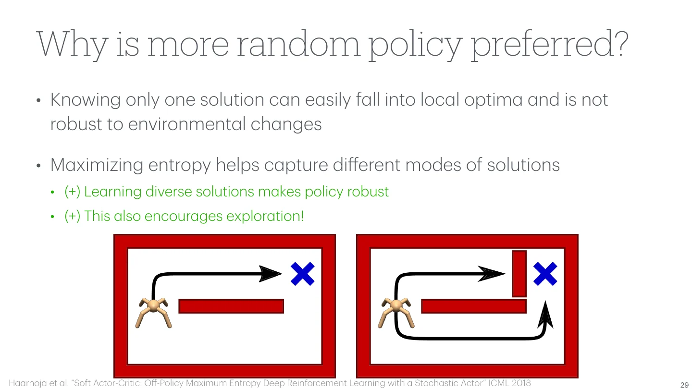<span class="zoom-hint">확대해서 보기 ↗</span></button><figcaption>슬라이드 29</figcaption></figure><div class="explanation"><div class="slide-reading"><p class="reading-kicker">최대 엔트로피와 SAC · 슬라이드 29</p><p>최대 엔트로피 목적은 기대 보상과 정책 무작위성의 균형을 둡니다. 온도 α가 이 균형을 바꾸며 학습·평가 정책의 표본화 방식도 명시해야 합니다.</p><details><summary>개념 전개 펼치기</summary><p>엔트로피 <span class="math-inline">\(\mathcal H(\pi)=-\mathbb E[\log\pi(a\mid s)]\)</span>가 높으면 정책이 여러 행동에 확률을 분산한다. SAC의 soft Q는 미래 보상에 entropy value를 포함하며, twin critics와 target을 사용한다. 자동 온도 조정은 목표 entropy에 맞추어 <span class="math-inline">\(\alpha\)</span>를 학습한다. 이는 reward scale과 무관한 상수가 아니다. 국내 RAILab의 사족보행 제어 연구는 거칠고 미끄럽거나 변형되는 지면에서 실험해 모델 오차가 있는 현실 환경의 강건성을 다룬다. 시뮬레이터에서 평균 return만 높이는 것과 실물에서 낙상·접촉·센서 지연을 견디는 것은 별도의 검증 문제다.</p>
</details></div></div></div></section><section class="slide" id="s30"><div class="slide-heading"><span class="slide-index">05-1 / 30</span><h2>Soft Q-value</h2></div><div class="slide-grid"><figure class="slide-figure"><button class="slide-image-button" data-zoom-src="../assets/slides/05-1_off_policy_rl/30.webp" data-zoom-label="05-1장 슬라이드 30">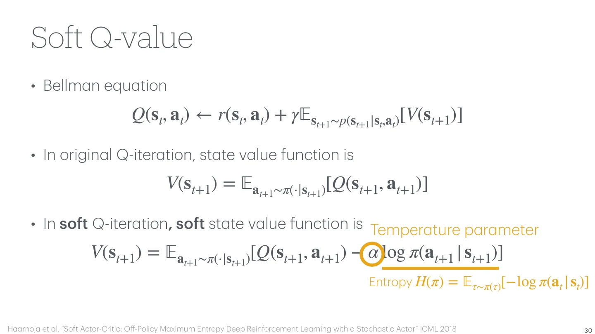<span class="zoom-hint">확대해서 보기 ↗</span></button><figcaption>슬라이드 30</figcaption></figure><div class="explanation"><div class="slide-reading"><p class="reading-kicker">최대 엔트로피와 SAC · 슬라이드 30</p><p>이 페이지에서 평가하는 대상이 상태가치 V인지 행동가치 Q인지 먼저 구분합니다. 평균 정책 행동과 최적 행동의 연산도 서로 바꾸어 쓰지 않습니다.</p><details><summary>개념 전개 펼치기</summary><p>엔트로피 <span class="math-inline">\(\mathcal H(\pi)=-\mathbb E[\log\pi(a\mid s)]\)</span>가 높으면 정책이 여러 행동에 확률을 분산한다. SAC의 soft Q는 미래 보상에 entropy value를 포함하며, twin critics와 target을 사용한다. 자동 온도 조정은 목표 entropy에 맞추어 <span class="math-inline">\(\alpha\)</span>를 학습한다. 이는 reward scale과 무관한 상수가 아니다. 국내 RAILab의 사족보행 제어 연구는 거칠고 미끄럽거나 변형되는 지면에서 실험해 모델 오차가 있는 현실 환경의 강건성을 다룬다. 시뮬레이터에서 평균 return만 높이는 것과 실물에서 낙상·접촉·센서 지연을 견디는 것은 별도의 검증 문제다.</p>
</details></div></div></div></section><section class="slide" id="s31"><div class="slide-heading"><span class="slide-index">05-1 / 31</span><h2>Soft policy iteration</h2></div><div class="slide-grid"><figure class="slide-figure"><button class="slide-image-button" data-zoom-src="../assets/slides/05-1_off_policy_rl/31.webp" data-zoom-label="05-1장 슬라이드 31">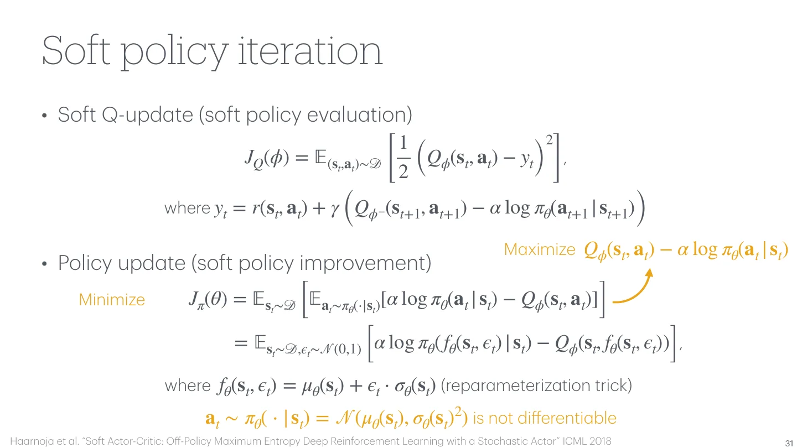<span class="zoom-hint">확대해서 보기 ↗</span></button><figcaption>슬라이드 31</figcaption></figure><div class="explanation"><div class="slide-reading"><p class="reading-kicker">최대 엔트로피와 SAC · 슬라이드 31</p><p>슬라이드의 정의와 그림을 바로 앞·뒤 페이지의 식과 연결합니다. 기호의 조건부 대상, 학습 데이터가 온 정책, 그리고 업데이트에서 고정된 값이 무엇인지 표시해 보세요.</p><details><summary>개념 전개 펼치기</summary><p>엔트로피 <span class="math-inline">\(\mathcal H(\pi)=-\mathbb E[\log\pi(a\mid s)]\)</span>가 높으면 정책이 여러 행동에 확률을 분산한다. SAC의 soft Q는 미래 보상에 entropy value를 포함하며, twin critics와 target을 사용한다. 자동 온도 조정은 목표 entropy에 맞추어 <span class="math-inline">\(\alpha\)</span>를 학습한다. 이는 reward scale과 무관한 상수가 아니다. 국내 RAILab의 사족보행 제어 연구는 거칠고 미끄럽거나 변형되는 지면에서 실험해 모델 오차가 있는 현실 환경의 강건성을 다룬다. 시뮬레이터에서 평균 return만 높이는 것과 실물에서 낙상·접촉·센서 지연을 견디는 것은 별도의 검증 문제다.</p>
</details></div></div></div></section><section class="slide" id="s32"><div class="slide-heading"><span class="slide-index">05-1 / 32</span><h2>Automatic temperature tuning</h2></div><div class="slide-grid"><figure class="slide-figure"><button class="slide-image-button" data-zoom-src="../assets/slides/05-1_off_policy_rl/32.webp" data-zoom-label="05-1장 슬라이드 32">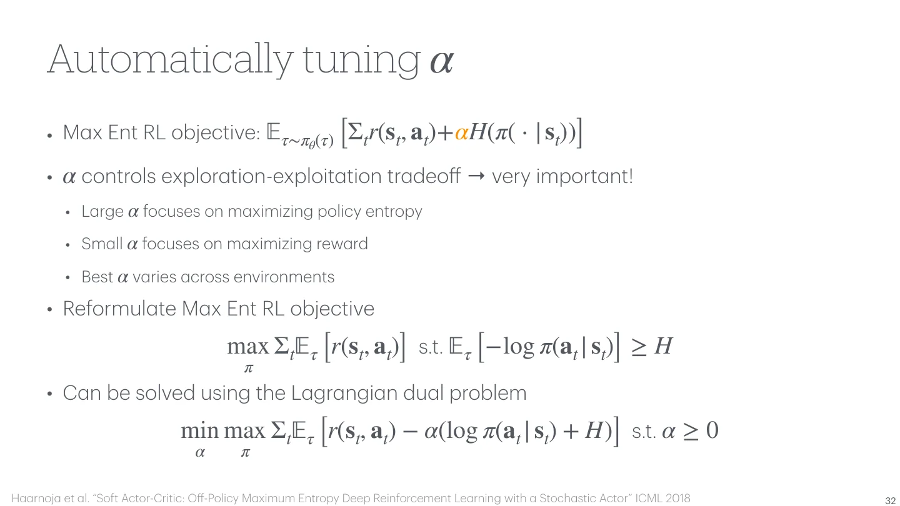<span class="zoom-hint">확대해서 보기 ↗</span></button><figcaption>슬라이드 32</figcaption></figure><div class="explanation"><div class="slide-reading"><p class="reading-kicker">최대 엔트로피와 SAC · 슬라이드 32</p><p>슬라이드의 정의와 그림을 바로 앞·뒤 페이지의 식과 연결합니다. 기호의 조건부 대상, 학습 데이터가 온 정책, 그리고 업데이트에서 고정된 값이 무엇인지 표시해 보세요.</p><details><summary>개념 전개 펼치기</summary><p>엔트로피 <span class="math-inline">\(\mathcal H(\pi)=-\mathbb E[\log\pi(a\mid s)]\)</span>가 높으면 정책이 여러 행동에 확률을 분산한다. SAC의 soft Q는 미래 보상에 entropy value를 포함하며, twin critics와 target을 사용한다. 자동 온도 조정은 목표 entropy에 맞추어 <span class="math-inline">\(\alpha\)</span>를 학습한다. 이는 reward scale과 무관한 상수가 아니다. 국내 RAILab의 사족보행 제어 연구는 거칠고 미끄럽거나 변형되는 지면에서 실험해 모델 오차가 있는 현실 환경의 강건성을 다룬다. 시뮬레이터에서 평균 return만 높이는 것과 실물에서 낙상·접촉·센서 지연을 견디는 것은 별도의 검증 문제다.</p>
</details></div></div></div></section><section class="slide" id="s33"><div class="slide-heading"><span class="slide-index">05-1 / 33</span><h2>Clipped double Q-learning Soft Q-value</h2></div><div class="slide-grid"><figure class="slide-figure"><button class="slide-image-button" data-zoom-src="../assets/slides/05-1_off_policy_rl/33.webp" data-zoom-label="05-1장 슬라이드 33">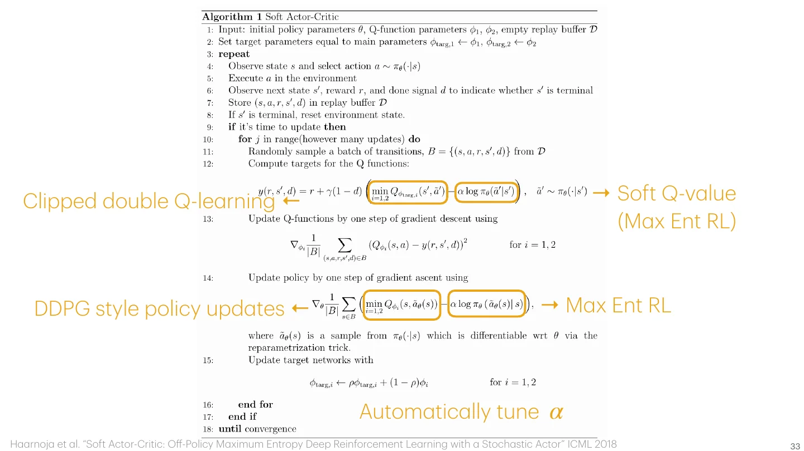<span class="zoom-hint">확대해서 보기 ↗</span></button><figcaption>슬라이드 33</figcaption></figure><div class="explanation"><div class="slide-reading"><p class="reading-kicker">최대 엔트로피와 SAC · 슬라이드 33</p><p>이 페이지에서 평가하는 대상이 상태가치 V인지 행동가치 Q인지 먼저 구분합니다. 평균 정책 행동과 최적 행동의 연산도 서로 바꾸어 쓰지 않습니다.</p><details><summary>개념 전개 펼치기</summary><p>엔트로피 <span class="math-inline">\(\mathcal H(\pi)=-\mathbb E[\log\pi(a\mid s)]\)</span>가 높으면 정책이 여러 행동에 확률을 분산한다. SAC의 soft Q는 미래 보상에 entropy value를 포함하며, twin critics와 target을 사용한다. 자동 온도 조정은 목표 entropy에 맞추어 <span class="math-inline">\(\alpha\)</span>를 학습한다. 이는 reward scale과 무관한 상수가 아니다. 국내 RAILab의 사족보행 제어 연구는 거칠고 미끄럽거나 변형되는 지면에서 실험해 모델 오차가 있는 현실 환경의 강건성을 다룬다. 시뮬레이터에서 평균 return만 높이는 것과 실물에서 낙상·접촉·센서 지연을 견디는 것은 별도의 검증 문제다.</p>
</details></div></div></div></section><section class="slide" id="s34"><div class="slide-heading"><span class="slide-index">05-1 / 34</span><h2>SAC</h2></div><div class="slide-grid"><figure class="slide-figure"><button class="slide-image-button" data-zoom-src="../assets/slides/05-1_off_policy_rl/34.webp" data-zoom-label="05-1장 슬라이드 34">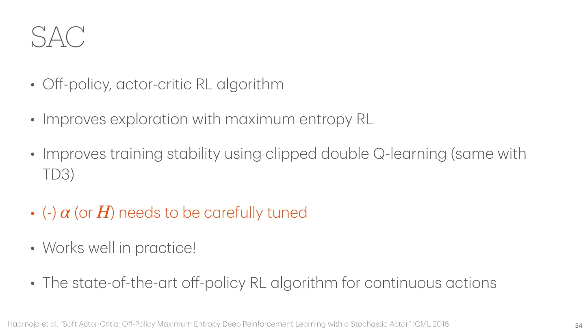<span class="zoom-hint">확대해서 보기 ↗</span></button><figcaption>슬라이드 34</figcaption></figure><div class="explanation"><div class="slide-reading"><p class="reading-kicker">최대 엔트로피와 SAC · 슬라이드 34</p><p>최대 엔트로피 목적은 기대 보상과 정책 무작위성의 균형을 둡니다. 온도 α가 이 균형을 바꾸며 학습·평가 정책의 표본화 방식도 명시해야 합니다.</p><details><summary>개념 전개 펼치기</summary><p>엔트로피 <span class="math-inline">\(\mathcal H(\pi)=-\mathbb E[\log\pi(a\mid s)]\)</span>가 높으면 정책이 여러 행동에 확률을 분산한다. SAC의 soft Q는 미래 보상에 entropy value를 포함하며, twin critics와 target을 사용한다. 자동 온도 조정은 목표 entropy에 맞추어 <span class="math-inline">\(\alpha\)</span>를 학습한다. 이는 reward scale과 무관한 상수가 아니다. 국내 RAILab의 사족보행 제어 연구는 거칠고 미끄럽거나 변형되는 지면에서 실험해 모델 오차가 있는 현실 환경의 강건성을 다룬다. 시뮬레이터에서 평균 return만 높이는 것과 실물에서 낙상·접촉·센서 지연을 견디는 것은 별도의 검증 문제다.</p>
</details></div></div></div></section><section class="slide" id="s35"><div class="slide-heading"><span class="slide-index">05-1 / 35</span><h2>TD3 vs. SAC</h2></div><div class="slide-grid"><figure class="slide-figure"><button class="slide-image-button" data-zoom-src="../assets/slides/05-1_off_policy_rl/35.webp" data-zoom-label="05-1장 슬라이드 35">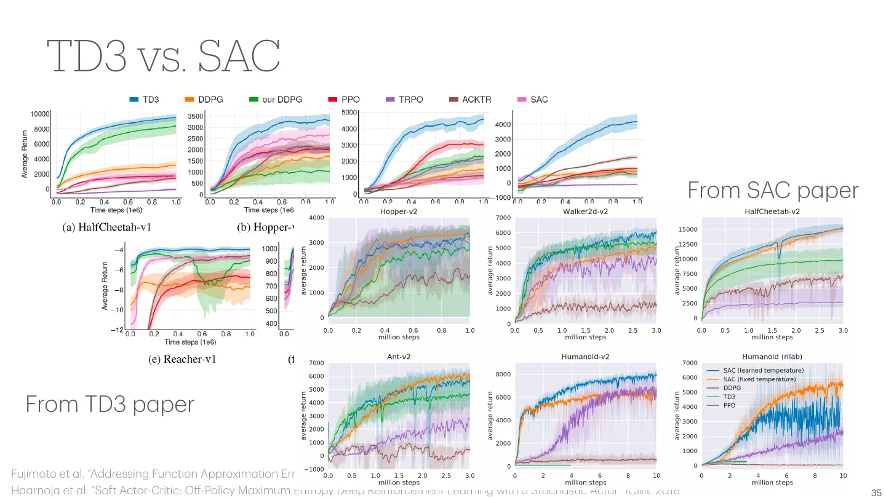<span class="zoom-hint">확대해서 보기 ↗</span></button><figcaption>슬라이드 35</figcaption></figure><div class="explanation"><div class="slide-reading"><p class="reading-kicker">최대 엔트로피와 SAC · 슬라이드 35</p><p>TD3는 두 critic의 작은 값을 쓰고 target 행동을 평활화하며 actor 업데이트를 늦춥니다. 각 장치가 서로 다른 과대추정·오차 전파 원인을 겨냥합니다.</p><details><summary>개념 전개 펼치기</summary><p>엔트로피 <span class="math-inline">\(\mathcal H(\pi)=-\mathbb E[\log\pi(a\mid s)]\)</span>가 높으면 정책이 여러 행동에 확률을 분산한다. SAC의 soft Q는 미래 보상에 entropy value를 포함하며, twin critics와 target을 사용한다. 자동 온도 조정은 목표 entropy에 맞추어 <span class="math-inline">\(\alpha\)</span>를 학습한다. 이는 reward scale과 무관한 상수가 아니다. 국내 RAILab의 사족보행 제어 연구는 거칠고 미끄럽거나 변형되는 지면에서 실험해 모델 오차가 있는 현실 환경의 강건성을 다룬다. 시뮬레이터에서 평균 return만 높이는 것과 실물에서 낙상·접촉·센서 지연을 견디는 것은 별도의 검증 문제다.</p>
</details></div></div></div></section><section class="slide" id="s36"><div class="slide-heading"><span class="slide-index">05-1 / 36</span><h2>What we have learned so far</h2></div><div class="slide-grid"><figure class="slide-figure"><button class="slide-image-button" data-zoom-src="../assets/slides/05-1_off_policy_rl/36.webp" data-zoom-label="05-1장 슬라이드 36">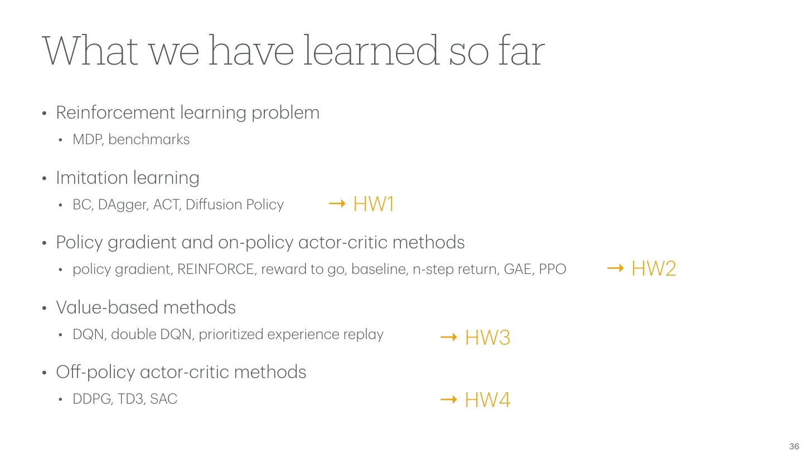<span class="zoom-hint">확대해서 보기 ↗</span></button><figcaption>슬라이드 36</figcaption></figure><div class="explanation"><div class="slide-reading"><p class="reading-kicker">알고리즘 선택 관점 · 슬라이드 36</p><p>슬라이드의 정의와 그림을 바로 앞·뒤 페이지의 식과 연결합니다. 기호의 조건부 대상, 학습 데이터가 온 정책, 그리고 업데이트에서 고정된 값이 무엇인지 표시해 보세요.</p><details><summary>개념 전개 펼치기</summary><p>같은 환경도 action 차원, 데이터 재사용 가능성, reward scale, 계산 예산, 탐험 요구가 달라 최선의 방법이 달라진다. 성능 곡선의 평균과 분산, 상호작용 횟수를 함께 비교하고 단일 성공 사례로 일반화하지 않는다.</p>
</details></div></div></div></section><section class="slide" id="s37"><div class="slide-heading"><span class="slide-index">05-1 / 37</span><h2>Next class</h2></div><div class="slide-grid"><figure class="slide-figure"><button class="slide-image-button" data-zoom-src="../assets/slides/05-1_off_policy_rl/37.webp" data-zoom-label="05-1장 슬라이드 37"><span class="zoom-hint">확대해서 보기 ↗</span></button><figcaption>슬라이드 37</figcaption></figure><div class="explanation"><div class="slide-reading"><p class="reading-kicker">알고리즘 선택 관점 · 슬라이드 37</p><p>이 페이지는 이번 강의의 경계를 정리합니다. 마지막 개념이 다음 단원의 첫 질문으로 어떻게 이어지는지 한 문장으로 요약해 보세요.</p><details><summary>개념 전개 펼치기</summary><p>같은 환경도 action 차원, 데이터 재사용 가능성, reward scale, 계산 예산, 탐험 요구가 달라 최선의 방법이 달라진다. 성능 곡선의 평균과 분산, 상호작용 횟수를 함께 비교하고 단일 성공 사례로 일반화하지 않는다.</p>
</details></div></div></div></section><nav class="chapter-pager"><a href="04-1.html"><small>이전 장</small><strong>← Q-learning, DQN과 Rainbow</strong></a><a href="05-2.html"><small>다음 장</small><strong>RL 실험과 벤치마크 →</strong></a></nav><footer class="site-footer">Deep Reinforcement Learning · 2026-2</footer></main></div><dialog id="slide-dialog" class="slide-dialog"><button data-dialog-close>×</button><p></p></dialog><dialog id="search-dialog" class="search-dialog"><div class="search-panel"><div class="search-input-row"><input type="search" id="search-input" placeholder="개념, 알고리즘, 수식 검색"><button data-search-close>×</button></div><div id="search-results"></div><p class="search-hint">슬라이드 제목과 설명을 함께 검색합니다. Esc로 닫기</p></div></dialog><script src="../assets/search-index.js"></script><script src="../assets/site.js"></script></body></html>